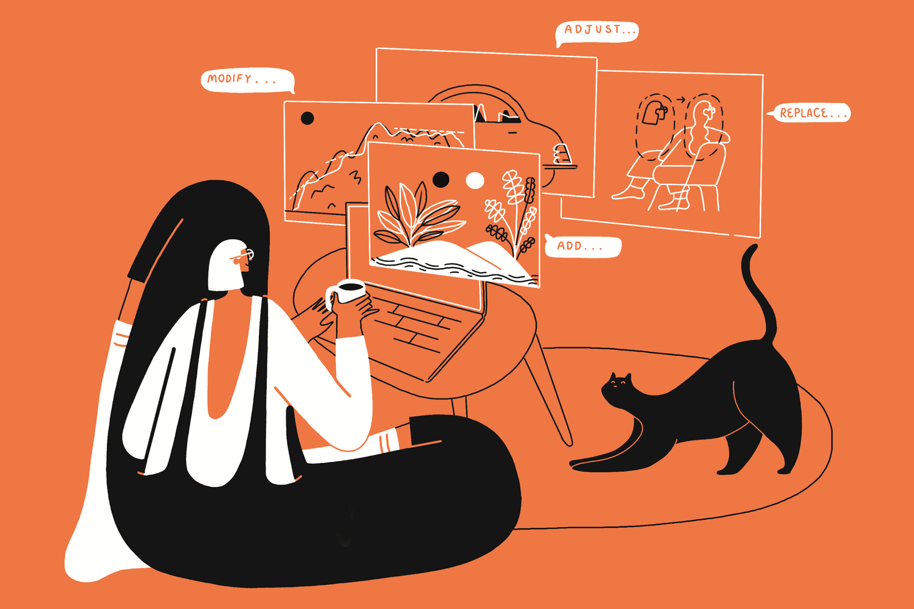

By Noam Benz Bar | November 2, 2023
In a world where artificial intelligence has been weaving its way into various industries, photography stands as a fascinating case study of the
harmonious marriage between human creativity and technological advancement. From the invention of the camera to modern AI-powered editing tools,
the journey of photography has been a remarkable tale of innovation and evolution. While some photographers and enthusiasts eagerly embrace the latest
rise of AI, others are still sitting on the fence, waiting to see how the exploration of its implications on photography services unfold.
The dynamic relationship between AI and photography has been on our radar throughout the past year and it’s time we’ll address our take on it. Dive in
with us to find out why photographers remain irreplaceable, what are the more vulnerable photography services, how AI can enhancebr> photographers' skills,
and the future trajectory of AI in photography.
Photography, often dubbed as "painting with light", has a rich history that precedes the digital age. From the first camera obscura to the daguerreotype, each
milestone paved the way for capturing moments in time. The transition from film to digital sensors marked a significant turning point, allowing for rapid image
acquisition and manipulation. The rise of smartphones, accompanied by the initial fear that camera phones would replace photographers, shook the industry and
redefined how we perceive and create images. The emergence of AI in photography builds upon this foundation, promising revolutionary changes.
Made On Fiverr by @addyfe
Unlike certain industries where AI has caused workforce displacement, the field of photography remains uniquely positioned. The human element intrinsic to the art
of photography is difficult to replicate. Photographers not only capture scenes but infuse their emotions, perspectives, and stories into their work. The intuitive
understanding of composition, lighting, and emotions remains an area where AI struggles to match human creativity.
AI's prowess in writing and illustration services is largely attributed to its ability to generate content based on patterns and data analysis. However, photography
often requires a spontaneous response to unpredictable situations, where human decision-making reigns supreme. It more often than not requires a photographer
to be present at one place at a specific time in order to capture the moment. This ability to adapt and think creatively in real-time and the fact that photographers
are actual humans grants photographers an enduring edge over AI.
Made On Fiverr by @addyfe
As AI continues its expansion into the realm of photography, certain domains appear more susceptible to disruption than others. For instance, the rise of AI-generated
portraits based on individuals' latest selfies and its utilization by brands to seamlessly integrate products into various lifestyle environments and alongside models has been
evident. This AI-powered automation offers efficiency and convenience, allowing quick content generation with minimal manual effort. However, despite


The saga of AI in photography is one of synergy rather than substitution. As long as photographers do not fear the future,
the same way they knew how to embrace technology over the years, their adaptability, intuition, and emotional resonance
ensure their irreplaceability in an ever-evolving technological landscape. While AI's role in automating certain tasks is undeniable,
its true potential lies in enhancing human creativity and offering new dimensions to artistic expression. As we gaze into the
future, the story of AI in photography promises to be a narrative of collaboration between human vision and artificial intelligence,
resulting in a richer visual tapestry for generations to come.
Meet Fiverr's Logo Maker Scholarship Winners Maya & Lillian
Learn more about what buyer's want to see on your freelance profile.
Coupons are usually foreign to the freelance world. But many of us are simply unaware of the power of coupons to drive customer retention. In this article, we explore the
English